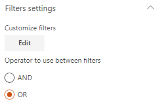
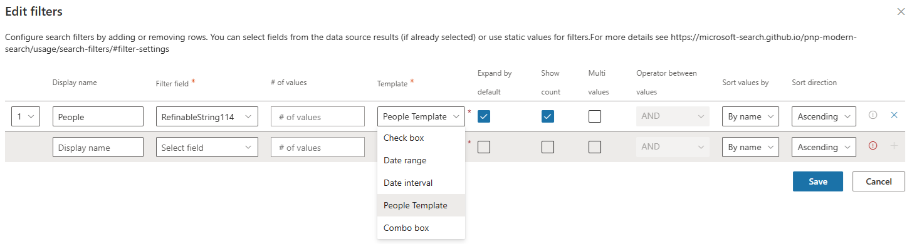

Search Filters Web Part¶
The 'Filters' Web Part allows to filter the current results displayed in a 'Search Results' Web Part. This component is higly configurable to meet you requirements and it works for all data sources.


Configuration¶
Connection¶
To use the filters, we must first connect it to one or multiple 'Search Results' Web Parts. In the other hand, you must connect back those Web Parts to the 'Filters' one. It is a two-ways connection.

If you connect more than one Web Part, the filter values and counts will be merged for similar filter names:
Example
Data sources #1 and #1 expose respectively a 'FileType' filter with values and counts value1:1, value2:1 for #1 and value2:1, value4:1 for #2 and both are connected to the filters Web Part. In this case, a single 'FileType' filter name will be displayed (because the filter name is the same) with values value1:1,value2:2,value3:1,value4:1. If you select a value that is not present in a data source (ex: value1 for data source #2), you will simply get zero result.
Filter settings¶

The filter settings are as follow:

| Setting | Description |
|---|---|
| Display Name | A friendly name for the filter |
| Filter field | The internal data source field to use as filter. Here you can select a field from the current data source (if data have been already retrieved) of type your own custom value (press enter to validate). |
| # of values | The maximum number of values to be retrieved for a given filter. This value is useful if you use SharePoint refiners with a lot of refiner values. By default SharePoint will only retreve the first 100 values. To get all refiner values, you must specify an higher number manually (maximum value is 1000). |
| Template | The template to use to display filter values. The builtin templates are:
|
| Filter type | Specify if the filter is a 'static' filter or a 'refiner' filter. See below for more information. |
| Expand by default | If applicable for the selected template, display values as expanded. |
| Show count | If applicable for the selected template, display counts for values. |
| Mutli values | If applicable for the selected template, allow selection of multiple values. |
| Operator between values | If multi values is selected, the operator to use between values (OR/AND). |
| Sort values by | Sort values by name or by count. |
| Sort direction | Sort values in ascending/descending order. |


Operator between filters¶

You can select the operator to use between filters (OR or AND).
Filter types: 'Static' filter versus 'Refiner' filter¶
The Web Part supports two types of filters ('Static' and 'Refiner'). However, there are some differences that are important to understand between these two if you want to use them properly:
- Refiner: a 'Refiner' filter means the filter gets its values from the data source and sends back the selected ones the data source. If the data source has no result, there won't be any refiner values, simple as that.
- Static filter: a 'Static' filter means the filter doesn't care about filter values sent by the data source and provides its own arbitrary values regardless of input values. A date range picker (or any picker) are good examples of what an 'Static' filter is. Such a filter do not need necessarily need a Search Results connection.
Use indexed property bag properties with taxonomy values¶
This behavior only works with the SharePoint Search Data source and the Enabled localization flag activated.
Using an indexed property bag value could be useful to store information about a SharePoint site or other element that can't be tagged with a taxonomy value directly. The PnP Modern Search solution supports property bag properties values that use the following taxonomy value format to be able to filter on them (ex: a taxonomy multi values separated by a semicolon (;)):
L0|#a2cf1afb-44b6-4cf4-bf37-642bb2e9bff3|Category 1;L0|#02e3406c0-1048-4bce-90eb-e7a51dfa7f31|Category3;L0|#07e094327-23d7-48af-9699-781eb26dc40f|Category2
These taxonomy values can then be used in the Filters Web Part using a RefinableStringXX search managed property to filter specific sites or elements. As an example, you can refer to the "Create an end-to-end Office 365 groups provisioning solution" tutorial GitHub project to leverage this format.
Filter deep linking¶
The Search Filter Web Part supports deep linking, meaning you can preselect filters from the URL at page load. When filter values are selected, a query string parameter f is append to the current URL containing the current filter values data.
If you have connected the search result web part to a search box, ensure the search term is set to be dynamic and part of the URL in the search box web part. If not, copying the URL will not contain the search terms."

Important
We recommend to use the URL generated from filter values selection instead of crafting the URL manually.